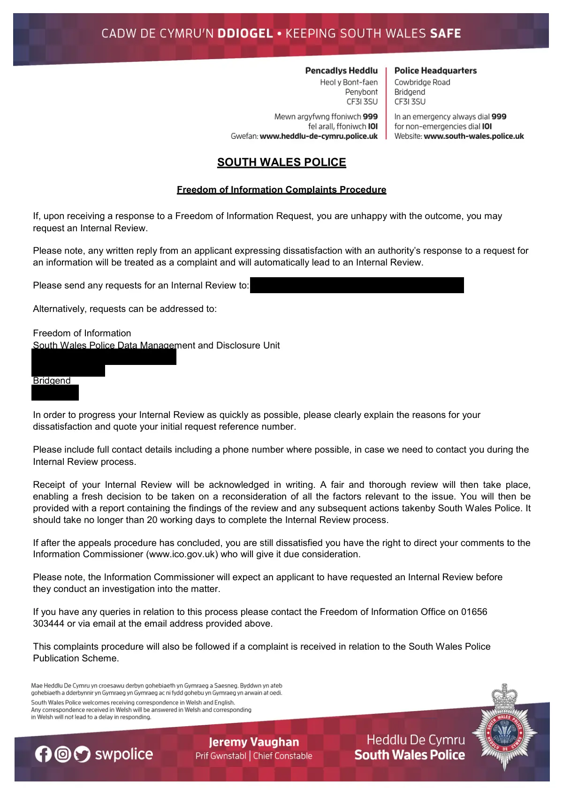

GHF-E106-R110-A1 not held
Complaints Procedure.pdf

Transcript
SOUTH WALES POLICE Freedom of Information Complaints Procedure If, upon receiving a response to a Freedom of Information Request, you are unhappy with the outcome, you may request an Internal Review. Please note, any written reply from an applicant expressing dissatisfaction with an authority’s response to a request for an information will be treated as a complaint and will automatically lead to an Internal Review. Please send any requests for an Internal Review to: [email redacted] Alternatively, requests can be addressed to: Freedom of Information South Wales Police Data Management and Disclosure Unit [address redacted] Bridgend [address redacted] In order to progress your Internal Review as quickly as possible, please clearly explain the reasons for your dissatisfaction and quote your initial request reference number. Please include full contact details including a phone number where possible, in case we need to contact you during the Internal Review process. Receipt of your Internal Review will be acknowledged in writing. A fair and thorough review will then take place,
Read more
enabling a fresh decision to be taken on a reconsideration of all the factors relevant to the issue. You will then be provided with a report containing the findings of the review and any subsequent actions takenby South Wales Police. It should take no longer than 20 working days to complete the Internal Review process. If after the appeals procedure has concluded, you are still dissatisfied you have the right to direct your comments to the Information Commissioner (www.ico.gov.uk) who will give it due consideration. Please note, the Information Commissioner will expect an applicant to have requested an Internal Review before they conduct an investigation into the matter. If you have any queries in relation to this process please contact the Freedom of Information Office on [phone redacted] or via email at the email address provided above. This complaints procedure will also be followed if a complaint is received in relation to the South Wales Police Publication Scheme. HEDDLU DE CYMRU Gweithdrefn Cwyno am Rhyddid Gwybodaeth Os byddwch, wrth dderbyn ymateb i Gynnig Rhyddid Gwybodaeth, yn anhapus â'r canlyniad, gallwch ofyn am Adolygiad Mewnol. Cofiwch, caiff unrhyw ymateb ysgrifenedig gan ymgeisydd yn mynegi anfodlonrwydd ynglŷn ag ymateb awdurdod i gais am wybodaeth ei drin fel cwyn a bydd yn arwain at Adolygiad Mewnol yn awtomatig. Anfonwch unrhyw geisiadau am Adolygiad Mewnol at : [email redacted] Neu, gall ceisiadau cael eu hanfon at: Rhyddid Gwybodaeth Uned Rheoli a Datblygu Data Heddlu De Cymru Pencadlys Heddlu De Cymru Heol y Bont-faen Pen-y-bont ar Ogwr [address redacted] Er mwyn prosesu eich Adolygiad Mewnol mor gyflym â phosib, esboniwch eich rhesymau dros eich anfodlonrwydd yn glir os gwelwch yn dda a dyfynnwch rif cyfeirnod eich cais cychwynnol. A wnewch chi gynnwys eich manylion cyswllt llawn os gwelwch yn dda gan gynnwys rhif ffôn lle y bo'n bosibl, rhag ofn y bydd angen inni gysylltu â chi yn ystod y Broses Adolygu. Byddwn yn cydnabod derbyn eich Adolygiad Mewnol yn ysgrifenedig. Caiff adolygiad teg a thrylwyr ei wneud, gan alluogi penderfyniad ffres ar ôl ail-ystyried yr holl ffactorau sy'n berthnasol i'r broblem. Byddwch wedyn yn derbyn adroddiad yn cynnwys canfyddiadau'r adolygiad ac unrhyw gamau dilynol a gymerwyd gan Heddlu De Cymru. Ni ddylai gymryd mwy na 20 diwrnod gwaith i gwblhau'r broses Adolygiad Mewnol. Os byddwch dal yn anfodlon ar ôl i'r broses apelio ddod i ben, mae gennych hawl i gyfeirio'ch sylwadau at y Comisiynydd Gwybodaeth (www.ico.gov.uk) a fydd yn rhoi'r ystyriaeth ddyledus iddynt. Noder, bydd y Comisiynydd Gwybodaeth yn disgwyl i'r ymgeisydd fod wedi gwneud cais am Adolygiad Mewnol cyn iddynt gynnal ymchwiliad i'r mater. Os oes gennych unrhyw ymholiadau yn ymwneud â'r broses hon, yna cysylltwch â'r Swyddfa Rhyddid Gwybodaeth ar [phone redacted] neu drwy'r cyfeiriad e-bost sydd wedi'i nodi uchod. Bydd y weithdrefn gwyno hon yn cael ei ddilyn hefyd os bydd cwyn yn cael ei derbyn yn ymwneud â Chynllun Cyhoeddiadau Heddlu De Cymru.
Artifact description
States South Wales Police does not hold information relating to named individuals requested.
| Catalogue ID | GHF-E106-R110-A1 |
|---|---|
| What it is | PDF document from South Wales Police. Attached to an email received on 29 September 2026, their reference 1040/26. 2 pages. |
| From | South Wales Police |
| Email received | 29 September 2026 |
| Their reference | 1040/26 |
| Pages | 2 |
| File | Complaints Procedure.pdf (451 KB) |
| State | Read |
Our integration
Part of the FOI thread with South Wales Police opened 28 September 2026. The thread's standing classification is “not held”.
Concern to test: whether this reply answers the question as asked, or a narrower one. Not checked against the original request wording here.
Related: GHF-E106-R109-A1 — Response 1040_26.pdf · The covering email · What They Don’t Say: WTDS-d801216e-1 · EV-0510 in the evidence catalogue · Timeline · Disclosure Dartboard